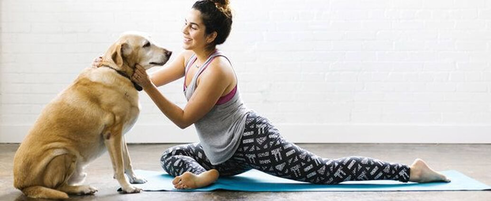
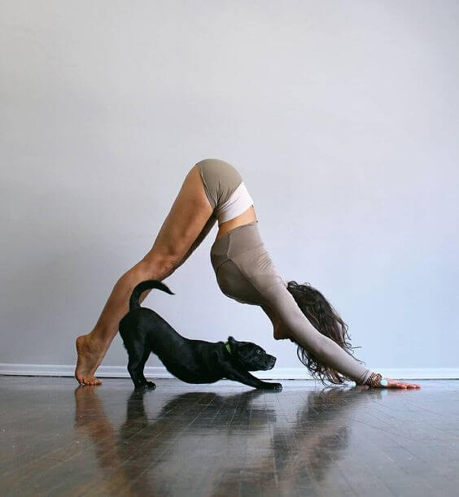
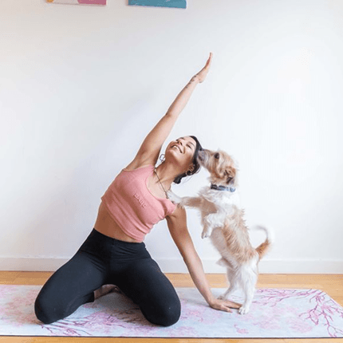

Furrever Pals is more than a yoga studio. Every puppy in our classes is a rescue from international and Vancouver's local animal shelters. We are committed to creating a space where participants experience genuine relaxation and meaningful connection with animals who need homes! If you are considering adopting, our sessions offer the perfect opportunity to meet your potential companion in a calm, supportive environment.


Tens and thousands of pets are abandoned each year in Canada. Many never find homes. Furrever Pals was founded on the belief that every animal deserves a family and every person deserves the unconditional companionship that comes from rescue adoption.
When you choose to adopt through Furrever Pals, you are not just gaining a pet. You are giving a second chance to an animal who has already experienced loss. Our shelter partners carefully match each puppy with participants during yoga sessions, creating a natural, pressure free environment where real connections form.

All puppies in our programme arrive fully vaccinated and dewormed. If you find your match during a session, you are welcome to take your new companion home that same day. This is not a transaction. This is a commitment rooted in compassion and genuine care.
By choosing adoption over breeding, you support animal welfare, reduce demand on overcrowded shelters, and become part of a community that believes every life matters. That is what Furrever Pals stands for.
If a puppy captured your heart during class, you are already on your way to something special. Our adoption process is designed to be straightforward and supportive, ensuring the best match between you and your future companion.
Every adoption tells a story of two lives coming together. Visit our Adoption page to learn more about our process, meet our available puppies, and take the first step toward bringing home your forever friend.